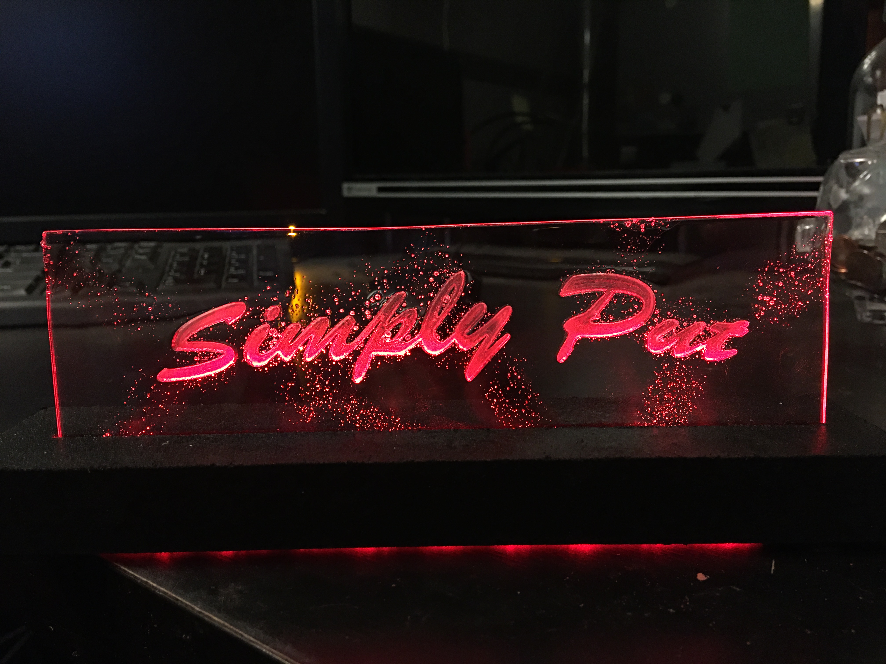

RGB Acrylic Sign
This was also a small project, and it was another piece for my friend's podcast set. The title of their podcast is Simply Put, so I engraved a piece of acrylic on my desktop CNC machine.
After engraving, I smoothed the edges with a torch and added some bubbling for a cool effect. The acrylic is set in a cutout of a piece of MDF wood, where I have an RGB LED strip recessed into the bottom of the MDF.
To top it off, I found a 3-way switch to light up the LED strip either red, green, or blue, all from 1 power supply.
